5 Grain yield meta-analysis
Let’s get started with the analysis by first finding the best model fit that answers our research question.
Which spray management scenario provides the greatest yield protection from powdery mildew.
To do this, in our model:
Grain yield is our response variable (t / ha)
Trial, which resolves combinations of categorical variables: year, location, row spacing, fungicide dose and cultivar; is set as a random intercept
We will test spray management (our treatment) as a fixed effect and random interactive term to trial
First, how well does the data compare across the trial years and trials?
# class spray_management as a factor and reorder them for the plot
slimmer_PM_dat$spray_management <-
factor(slimmer_PM_dat$spray_management, rev(
c(
"control",
"Early",
"Recommended",
"Recommended_plus",
"Late",
"Late_plus"
)
))
ggplot(slimmer_PM_dat, aes(x = as.factor(year), fill = spray_management)) +
geom_bar(position = "dodge2") +
scale_fill_usq(name = "Spray Management") +
xlab("Year")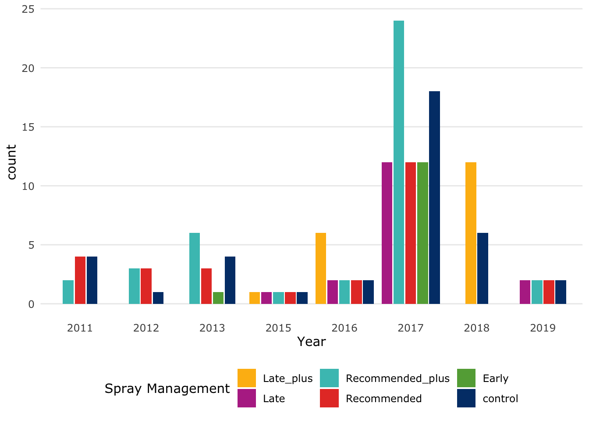
kable(
table(slimmer_PM_dat$spray_management, slimmer_PM_dat$year),
align = rep('c', 8),
caption = "Which treatments and how many treatments are represented in each year"
) %>%
kable_styling(
"striped",
fixed_thead = TRUE,
full_width = FALSE,
position = "center"
)| 2011 | 2012 | 2013 | 2015 | 2016 | 2017 | 2018 | 2019 | |
|---|---|---|---|---|---|---|---|---|
| Late_plus | 0 | 0 | 0 | 1 | 7 | 0 | 12 | 0 |
| Late | 0 | 0 | 0 | 1 | 2 | 12 | 0 | 2 |
| Recommended_plus | 2 | 6 | 6 | 1 | 5 | 24 | 0 | 2 |
| Recommended | 4 | 6 | 3 | 1 | 4 | 12 | 0 | 2 |
| Early | 0 | 0 | 1 | 0 | 0 | 12 | 0 | 0 |
| control | 4 | 2 | 4 | 1 | 3 | 18 | 6 | 2 |
Treatments Late_plus and Early don’t have very good comparison to other treatments.
Let’s visualise the spread of data in each treatments with box-plots.
slimmer_PM_dat %>%
ggplot(
aes(
y = grain_yield.t.ha,
x = spray_management,
fill = spray_management,
colour = spray_management
)
) +
geom_boxplot(alpha = 0.25) +
geom_jitter(width = 0.1, alpha = 0.5) +
labs(x = "Spray management variable",
y = "Grain yield (t/Ha)",
title = "Mean grain yield from each treatment \n categorised by spray management scenario") +
theme(plot.title = element_text(hjust = 0.5)) +
geom_hline(yintercept = 0, linetype = 2) +
scale_fill_usq() +
scale_colour_usq() +
coord_flip() +
guides(fill = FALSE, color = FALSE)
There seems like little difference between the treatments, with exception of Late_plus.
Let’s do this plot again, but let’s look at the proportional mean difference between each treatment and the no spray control for each study, this should reduce variation in yield due between trials.
slimmer_PM_dat %>%
filter(spray_management != "control") %>%
ggplot(
aes(
y = prop_yield_gain,
x = spray_management,
fill = spray_management,
colour = spray_management
)
) +
geom_boxplot(alpha = 0.25) +
geom_jitter(width = 0.1, alpha = 0.5) +
labs(x = "Spray management variable",
y = "Grain yield (t/Ha)",
title = "Mean grain yield from each treatment \n categorised by spray management scenario") +
theme(plot.title = element_text(hjust = 0.5)) +
geom_hline(yintercept = 0, linetype = 2) +
scale_fill_usq() +
scale_colour_usq() +
coord_flip() +
guides(fill = FALSE, color = FALSE)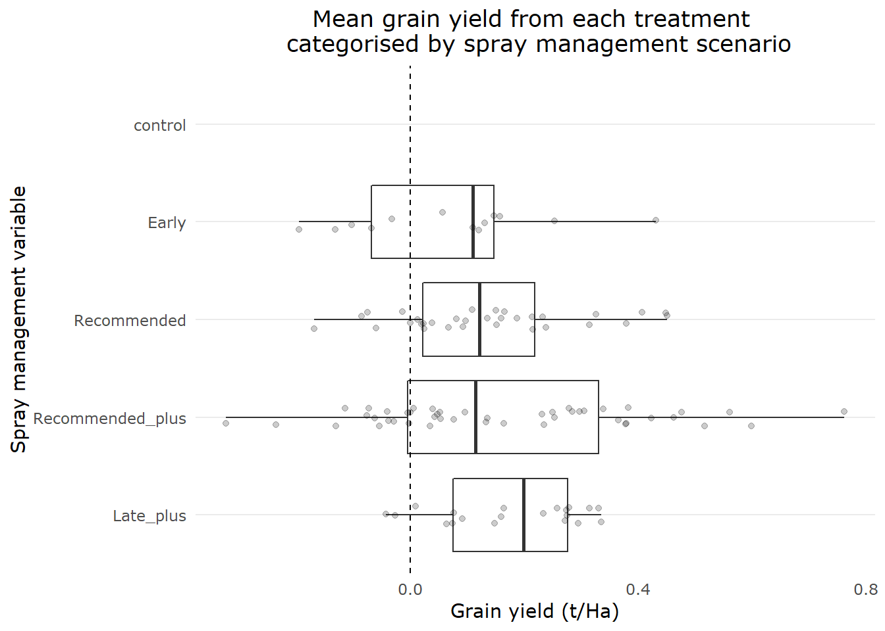
Using the mean difference in the treatment effect seems to show the effect of each treatment better than just raw yield and reduces the variability in the treatments. We know there is a good deal of variability in our studies and between them. Mungbean produces variable yields between seasons so ordinarilly we should use a response that highlights the difference in the treatment effects that we are interested in and reduce the variability. However for an arm-based analysis we calculate the differences between control and treatment after the meta-analysis.
5.0.1 Formating the response variable
Let’s inspect the response variance grain_yield.t.ha to see if it is normally distributed.
In many cases a log transformation of the response variable improves the fit, due to the prevalence of log distributed data in nature.
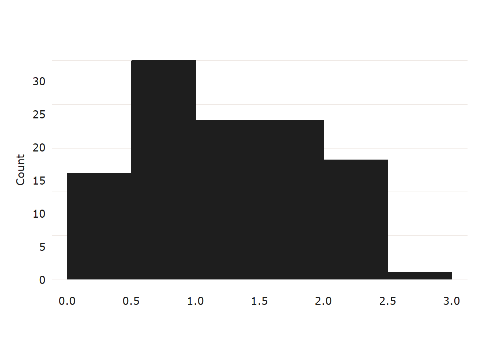
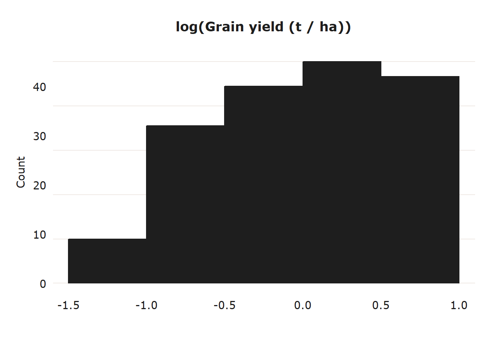
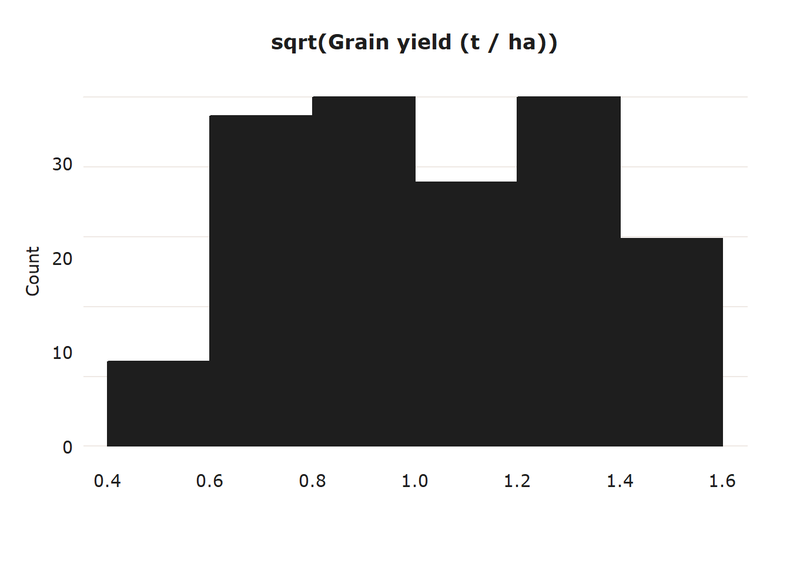
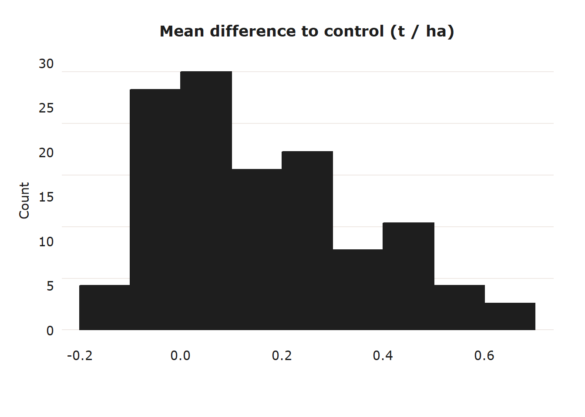 The distribution of data does not seem to be improved by transformation of the data. We will retain the continuous variable grain_yield.t.ha as the response. Mean differences won’t be used as we are following the methodology of a ARM-based model, where mean differences are calculated following the meta-analysis.
5.0.2 Formatting Variance
First let’s remove any entries missing variance.
## [1] TRUEslimmer_PM_dat <-
slimmer_PM_dat[!is.na(slimmer_PM_dat$yield_error), ]
slimmer_PM_dat$vi <- slimmer_PM_dat$yield_error5.0.2.1 Calculate sample variance from mean square errors
Currently our data frame has the sample variance calculated earlier, however we can approximate it using the mean squared error.
Let’s show the rational for our calculation and then add a secondary variance column (vi2).
\(MSE = Var + bias\)
However if our MSE was calculated from an unbiased sample we can assume \(bias = 0\) and therefore:
\(MSE = Var\)
To calculate the sample variance (for each treatment in the trial) from the mean square error (Trial variance) all we need to do is divide by the number of samples in each treatment. We can show this because: \(MSE = \frac{\sum_{y_1}^{y_n}(y_i - \overline{y})^2}{n - 1}\) Where the sum of squares for the fungicide treatment estimator (\(y\)) is divided by the number of fungicide treatments (\(n\)).
The sample variance is a similar formula except we use \(x\) instead of \(y\).
\(S_{Var} = \frac{\sum_{x_1}^{x_n}(x_i - \overline{x})^2}{n - 1}\)
\(x\) being each observation within the experiment and \(n\) being the number of samples in the whole trial.
Therefore:
\(S_{Var}\approx\frac{1}{n_{x}}\frac{\sum_{y_1}^{y_n}(y_i - \overline{y})^2}{n_y - 1}\)
Where \(n_x\) is the number of samples within each treatment.
#calculation when using log of response
# slimmer_PM_dat$vi <-
# slimmer_PM_dat$Y_Msquare / (slimmer_PM_dat$n * slimmer_PM_dat$grain_yield.t.ha ^
# 2)
slimmer_PM_dat$vi2 <-
slimmer_PM_dat$Y_Msquare /
slimmer_PM_dat$nNow Let’s simplify our data by removing the control data, converting disease pressure (D_pres) to a factor and selecting only the columns of data necessary for analysis.
We will also include the mean difference or response ratio grain_MD, between the treatment and control as a comparison of responses.
dat1 <-
slimmer_PM_dat %>%
mutate(vi = vi/n) %>%
mutate(spray_management =
factor(
spray_management,
c(
"control",
"Early",
"Recommended",
"Recommended_plus",
"Late",
"Late_plus"
)
),
D_pres =
factor(D_pres,
c("lowD",
"highD")),
id = row_number()) %>%
dplyr::select(
trial,
trial_ref,
location,
year,
row_spacing,
host_genotype,
spray_management,
fungicide_ai,
D_pres,
grain_yield.t.ha,
yield_gain,
dose,
vi,
yield_error,
vi2,
n,
id)5.1 metafor analysis
For the first grain yield meta-analysis, we’ll use the metafor package (Viechtbauer 2010).
To do a ARM based model we will use the package metafor.
We are using the spray_management variable as a moderator and an interactive term to the trial random variable.
PM_mv <- rma.mv(
yi = grain_yield.t.ha,
vi,
mods = ~ spray_management,
method = "ML",
random = list(~ spray_management | trial, ~1 | id),
struct = "UN",
control=list(optimizer="optim"),
data = dat1
)## Warning: Some combinations of the levels of the inner factor never occurred.
## Corresponding rho value(s) fixed to 0.##
## Multivariate Meta-Analysis Model (k = 154; method: ML)
##
## logLik Deviance AIC BIC AICc
## 50.1271 418.9706 -46.2543 35.7434 -34.2543
##
## Variance Components:
##
## estim sqrt nlvls fixed factor
## sigma^2 0.0005 0.0214 154 no id
##
## outer factor: trial (nlvls = 33)
## inner factor: spray_management (nlvls = 6)
##
## estim sqrt k.lvl fixed level
## tau^2.1 0.2292 0.4788 38 no control
## tau^2.2 0.1938 0.4402 13 no Early
## tau^2.3 0.2783 0.5275 27 no Recommended
## tau^2.4 0.3922 0.6262 40 no Recommended_plus
## tau^2.5 0.3240 0.5692 17 no Late
## tau^2.6 0.3784 0.6151 19 no Late_plus
##
## rho.cntr rho.Erly rho.Rcmm rho.Rcm_ rho.Late rho.Lt_p
## control 1 0.9090 0.9741 0.9715 0.9895 0.9782
## Early 0.9090 1 0.9791 0.9725 0.9569 0.0000
## Recommended 0.9741 0.9791 1 0.9918 0.9936 0.9967
## Recommended_plus 0.9715 0.9725 0.9918 1 0.9953 0.9986
## Late 0.9895 0.9569 0.9936 0.9953 1 0.9979
## Late_plus 0.9782 0.0000 0.9967 0.9986 0.9979 1
## cntr Erly Rcmm Rcm_ Late Lt_p
## control - no no no no no
## Early 7 - no no no yes
## Recommended 19 12 - no no no
## Recommended_plus 17 12 24 - no no
## Late 11 12 17 17 - no
## Late_plus 6 0 3 3 3 -
##
## Test for Residual Heterogeneity:
## QE(df = 148) = 37463.9220, p-val < .0001
##
## Test of Moderators (coefficients 2:6):
## QM(df = 5) = 31.4926, p-val < .0001
##
## Model Results:
##
## estimate se zval pval ci.lb
## intrcpt 1.1142 0.0850 13.1147 <.0001 0.9476
## spray_managementEarly -0.0481 0.0494 -0.9723 0.3309 -0.1450
## spray_managementRecommended 0.0953 0.0303 3.1418 0.0017 0.0359
## spray_managementRecommended_plus 0.1761 0.0414 4.2505 <.0001 0.0949
## spray_managementLate 0.1129 0.0304 3.7097 0.0002 0.0533
## spray_managementLate_plus 0.1466 0.0421 3.4821 0.0005 0.0641
## ci.ub
## intrcpt 1.2807 ***
## spray_managementEarly 0.0488
## spray_managementRecommended 0.1548 **
## spray_managementRecommended_plus 0.2572 ***
## spray_managementLate 0.1726 ***
## spray_managementLate_plus 0.2292 ***
##
## ---
## Signif. codes: 0 '***' 0.001 '**' 0.01 '*' 0.05 '.' 0.1 ' ' 1The first table in this output shows the tau^2 (variance) of each random effects and the number of occurrences for each treatment in the analysis. This effectively shows the heterogeneity between experiments for these partivular treatments.
The tau^2 also gives us the heterogeneity between trials and indicates Recommended_plus showed the highest heterogeneity between experiments followed by Late_plus, Late then Recommended, with Early and the no-spray control showing the least heterogeneity.
The second table is in two parts (left and right).
The left part, rho, is the correlation of variation between the specified treatments.
All comparisons were acceptable except for a comparison between Early and Late_plus, 0.000 rho.
Early and Late_plus treatments never occurred within the same trial, which is indicated by the right side of the table (hence the warning).
In this result we can see that the Early treatment is not significantly different to the intercept, which in this case is the mean of the no spray control.
However the other treatments are significantly different from the no-spray control (intercept).
The \(Q_M\) omnibus test of moderators, shows the moderators significantly influence the model (\(Q_M =\) 31.4926475 $, df = $ 5, P < 0.0001) and we can reject the null hypothesis (\(H_0 : \beta_1 = \beta_2 = \beta_3 =\beta_4 = 0\)) that there is no difference between the moderators (Viechtbauer 2010).
The analysis shows there is still a significant amount of residual heterogeneity ($Q_E = $31.4926475 $, df = $149, P < 0.0001 ) not captured by the spray management moderator indicating other possible moderators which might influence grain yield.
source("R/simple_summary.R")
summary(glht(PM_mv, linfct=cbind(contrMat(rep(1,6), type="Tukey"))), test=adjusted("none"))##
## Simultaneous Tests for General Linear Hypotheses
##
## Fit: rma.mv(yi = grain_yield.t.ha, V = vi, mods = ~spray_management,
## random = list(~spray_management | trial, ~1 | id), struct = "UN",
## data = dat1, method = "ML", control = list(optimizer = "optim"))
##
## Linear Hypotheses:
## Estimate Std. Error z value Pr(>|z|)
## 2 - 1 == 0 -1.16223 0.11227 -10.352 < 2e-16 ***
## 3 - 1 == 0 -1.01884 0.08729 -11.672 < 2e-16 ***
## 4 - 1 == 0 -0.93810 0.07563 -12.403 < 2e-16 ***
## 5 - 1 == 0 -1.00122 0.07838 -12.774 < 2e-16 ***
## 6 - 1 == 0 -0.96753 0.07737 -12.505 < 2e-16 ***
## 3 - 2 == 0 0.14339 0.03792 3.781 0.000156 ***
## 4 - 2 == 0 0.22413 0.05025 4.460 8.18e-06 ***
## 5 - 2 == 0 0.16101 0.04807 3.349 0.000811 ***
## 6 - 2 == 0 0.19471 0.05484 3.550 0.000385 ***
## 4 - 3 == 0 0.08074 0.02932 2.754 0.005888 **
## 5 - 3 == 0 0.01762 0.02579 0.683 0.494535
## 6 - 3 == 0 0.05131 0.03424 1.499 0.133988
## 5 - 4 == 0 -0.06313 0.02627 -2.403 0.016252 *
## 6 - 4 == 0 -0.02943 0.03001 -0.981 0.326762
## 6 - 5 == 0 0.03370 0.03058 1.102 0.270490
## ---
## Signif. codes: 0 '***' 0.001 '**' 0.01 '*' 0.05 '.' 0.1 ' ' 1
## (Adjusted p values reported -- none method)contrast_Ssum <- simple_summary(summary(glht(PM_mv, linfct=cbind(contrMat(rep(1,6), type="Tukey"))), test=adjusted("none")))
contrast_Ssum## contrast coefficients pvals sig
## 2 - 1 Early - control -1.16223277 0.000000e+00 ***
## 3 - 1 Recommended - control -1.01884012 0.000000e+00 ***
## 4 - 1 Recommended_plus - control -0.93809829 0.000000e+00 ***
## 5 - 1 Late - control -1.00122375 0.000000e+00 ***
## 6 - 1 Late_plus - control -0.96752723 0.000000e+00 ***
## 3 - 2 Recommended - Early 0.14339264 1.562074e-04 ***
## 4 - 2 Recommended_plus - Early 0.22413448 8.183663e-06 ***
## 5 - 2 Late - Early 0.16100902 8.106804e-04 ***
## 6 - 2 Late_plus - Early 0.19470554 3.850471e-04 ***
## 4 - 3 Recommended_plus - Recommended 0.08074184 5.887571e-03 **
## 5 - 3 Late - Recommended 0.01761638 4.945354e-01
## 6 - 3 Late_plus - Recommended 0.05131289 1.339879e-01
## 5 - 4 Late - Recommended_plus -0.06312546 1.625186e-02 *
## 6 - 4 Late_plus - Recommended_plus -0.02942894 3.267624e-01
## 6 - 5 Late_plus - Late 0.03369652 2.704901e-01These contrasts can be viewed in a plot
par(mar = c(5, 13, 4, 2) + 0.1)
plot(glht(PM_mv, linfct=cbind(contrMat(rep(1,6), type="Tukey"))), yaxt='n')
axis(2, at = seq_along(contrast_Ssum$contrast), labels = rev(contrast_Ssum$contrast), las=2, cex.axis = 0.8)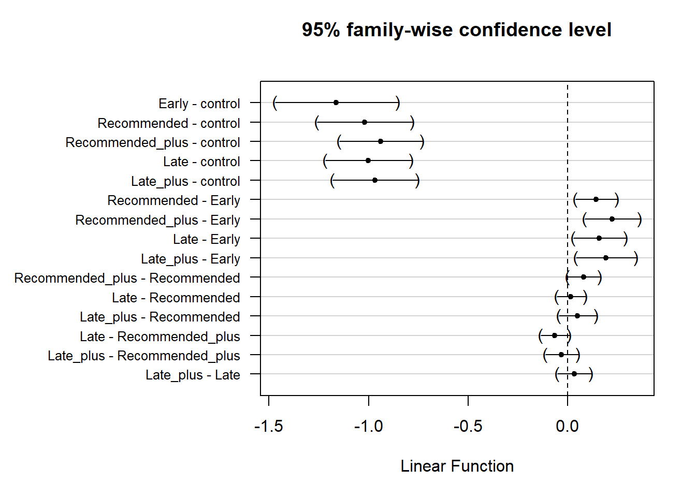
Does disease pressure on the crop affect the optimum spray scenario? Above we can see spraying at the first sign of powdery mildew or with in 7 - 13 days after first sign is effective at mitigating yield loss. Lets test this hypothesis by adding it as a moderator and comparing the new model with the original model above.
PM_mv2 <- rma.mv(
yi = grain_yield.t.ha,
vi,
mods = ~ spray_management*D_pres,
method = "ML",
random = list(~ spray_management | trial, ~1 | id),
struct = "UN",
control=list(optimizer="optim"),
data = dat1
)## Warning: Some combinations of the levels of the inner factor never occurred.
## Corresponding rho value(s) fixed to 0.##
## df AIC BIC AICc logLik LRT pval QE
## Full 33 -45.7337 54.4858 -27.0337 55.8668 29097.0961
## Reduced 27 -46.2543 35.7434 -34.2543 50.1271 11.4794 0.0746 37463.9220We can see that the lower \(QE\) indicates that disease pressure moderator helped explain some of the residual heterogeneity in differences in grain yield between treatments. However according to the Wald-test the models were not significantly different and we should use the original “Reduced” model.
The P value was close to the 0.05 cut-off so we will present the model output for the interest of the readers.
##
## Multivariate Meta-Analysis Model (k = 154; method: ML)
##
## logLik Deviance AIC BIC AICc
## 55.8668 407.4912 -45.7337 54.4858 -27.0337
##
## Variance Components:
##
## estim sqrt nlvls fixed factor
## sigma^2 0.0004 0.0203 154 no id
##
## outer factor: trial (nlvls = 33)
## inner factor: spray_management (nlvls = 6)
##
## estim sqrt k.lvl fixed level
## tau^2.1 0.2205 0.4695 38 no control
## tau^2.2 0.2114 0.4598 13 no Early
## tau^2.3 0.2970 0.5450 27 no Recommended
## tau^2.4 0.4226 0.6501 40 no Recommended_plus
## tau^2.5 0.3425 0.5853 17 no Late
## tau^2.6 0.1554 0.3942 19 no Late_plus
##
## rho.cntr rho.Erly rho.Rcmm rho.Rcm_ rho.Late rho.Lt_p
## control 1 0.9401 0.9855 0.9791 0.9942 0.9849
## Early 0.9401 1 0.9843 0.9767 0.9636 0.0000
## Recommended 0.9855 0.9843 1 0.9920 0.9937 0.9961
## Recommended_plus 0.9791 0.9767 0.9920 1 0.9953 0.9991
## Late 0.9942 0.9636 0.9937 0.9953 1 0.9975
## Late_plus 0.9849 0.0000 0.9961 0.9991 0.9975 1
## cntr Erly Rcmm Rcm_ Late Lt_p
## control - no no no no no
## Early 7 - no no no yes
## Recommended 19 12 - no no no
## Recommended_plus 17 12 24 - no no
## Late 11 12 17 17 - no
## Late_plus 6 0 3 3 3 -
##
## Test for Residual Heterogeneity:
## QE(df = 142) = 29097.0961, p-val < .0001
##
## Test of Moderators (coefficients 2:12):
## QM(df = 11) = 424.6603, p-val < .0001
##
## Model Results:
##
## estimate se zval pval
## intrcpt 1.2796 0.1671 7.6584 <.0001
## spray_managementEarly 0.1551 0.1741 0.8905 0.3732
## spray_managementRecommended 0.0737 0.0551 1.3377 0.1810
## spray_managementRecommended_plus 0.1601 0.0890 1.7986 0.0721
## spray_managementLate 0.1258 0.0569 2.2107 0.0271
## spray_managementLate_plus 0.4871 0.0509 9.5769 <.0001
## D_preshighD -0.2156 0.1927 -1.1187 0.2633
## spray_managementEarly:D_preshighD -0.1501 0.1816 -0.8266 0.4085
## spray_managementRecommended:D_preshighD 0.0668 0.0646 1.0333 0.3015
## spray_managementRecommended_plus:D_preshighD 0.0654 0.1027 0.6369 0.5242
## spray_managementLate:D_preshighD 0.0159 0.0708 0.2240 0.8228
## spray_managementLate_plus:D_preshighD -0.3808 0.0676 -5.6307 <.0001
## ci.lb ci.ub
## intrcpt 0.9521 1.6071 ***
## spray_managementEarly -0.1862 0.4964
## spray_managementRecommended -0.0343 0.1816
## spray_managementRecommended_plus -0.0144 0.3346 .
## spray_managementLate 0.0143 0.2373 *
## spray_managementLate_plus 0.3874 0.5867 ***
## D_preshighD -0.5933 0.1621
## spray_managementEarly:D_preshighD -0.5059 0.2058
## spray_managementRecommended:D_preshighD -0.0599 0.1934
## spray_managementRecommended_plus:D_preshighD -0.1359 0.2668
## spray_managementLate:D_preshighD -0.1229 0.1546
## spray_managementLate_plus:D_preshighD -0.5133 -0.2482 ***
##
## ---
## Signif. codes: 0 '***' 0.001 '**' 0.01 '*' 0.05 '.' 0.1 ' ' 1##
## Simultaneous Tests for General Linear Hypotheses
##
## Fit: rma.mv(yi = grain_yield.t.ha, V = vi, mods = ~spray_management *
## D_pres, random = list(~spray_management | trial, ~1 | id),
## struct = "UN", data = dat1, method = "ML", control = list(optimizer = "optim"))
##
## Linear Hypotheses:
## Estimate Std. Error z value Pr(>|z|)
## 2 - 1 == 0 -1.124562 0.251464 -4.472 7.75e-06 ***
## 3 - 1 == 0 -1.205956 0.154168 -7.822 5.11e-15 ***
## 4 - 1 == 0 -1.119494 0.130543 -8.576 < 2e-16 ***
## 5 - 1 == 0 -1.153827 0.136769 -8.436 < 2e-16 ***
## 6 - 1 == 0 -0.792577 0.202005 -3.924 8.73e-05 ***
## 7 - 1 == 0 -1.495226 0.347702 -4.300 1.71e-05 ***
## 8 - 1 == 0 -1.429698 0.236411 -6.048 1.47e-09 ***
## 9 - 1 == 0 -1.212869 0.198183 -6.120 9.36e-10 ***
## 10 - 1 == 0 -1.214209 0.239319 -5.074 3.90e-07 ***
## 11 - 1 == 0 -1.263772 0.213033 -5.932 2.99e-09 ***
## 12 - 1 == 0 -1.660386 0.148962 -11.146 < 2e-16 ***
## 3 - 2 == 0 -0.081394 0.184393 -0.441 0.658911
## 4 - 2 == 0 0.005067 0.199832 0.025 0.979770
## 5 - 2 == 0 -0.029265 0.186217 -0.157 0.875122
## 6 - 2 == 0 0.331985 0.178861 1.856 0.063438 .
## 7 - 2 == 0 -0.370665 0.249953 -1.483 0.138092
## 8 - 2 == 0 -0.305137 0.352050 -0.867 0.386083
## 9 - 2 == 0 -0.088307 0.184005 -0.480 0.631286
## 10 - 2 == 0 -0.089647 0.197982 -0.453 0.650688
## 11 - 2 == 0 -0.139210 0.185004 -0.752 0.451768
## 12 - 2 == 0 -0.535824 0.189259 -2.831 0.004638 **
## 4 - 3 == 0 0.086461 0.064045 1.350 0.177015
## 5 - 3 == 0 0.052129 0.044523 1.171 0.241665
## 6 - 3 == 0 0.413379 0.066088 6.255 3.97e-10 ***
## 7 - 3 == 0 -0.289271 0.217621 -1.329 0.183768
## 8 - 3 == 0 -0.223742 0.188026 -1.190 0.234064
## 9 - 3 == 0 -0.006913 0.115213 -0.060 0.952151
## 10 - 3 == 0 -0.008253 0.142981 -0.058 0.953969
## 11 - 3 == 0 -0.057816 0.111069 -0.521 0.602685
## 12 - 3 == 0 -0.454430 0.094116 -4.828 1.38e-06 ***
## 5 - 4 == 0 -0.034332 0.047416 -0.724 0.469027
## 6 - 4 == 0 0.326918 0.097470 3.354 0.000796 ***
## 7 - 4 == 0 -0.375732 0.252730 -1.487 0.137095
## 8 - 4 == 0 -0.310204 0.198013 -1.567 0.117211
## 9 - 4 == 0 -0.093375 0.137694 -0.678 0.497689
## 10 - 4 == 0 -0.094715 0.185291 -0.511 0.609233
## 11 - 4 == 0 -0.144278 0.147843 -0.976 0.329124
## 12 - 4 == 0 -0.540891 0.116243 -4.653 3.27e-06 ***
## 6 - 5 == 0 0.361250 0.074789 4.830 1.36e-06 ***
## 7 - 5 == 0 -0.341400 0.229850 -1.485 0.137461
## 8 - 5 == 0 -0.275872 0.187319 -1.473 0.140821
## 9 - 5 == 0 -0.059042 0.108177 -0.546 0.585206
## 10 - 5 == 0 -0.060382 0.150689 -0.401 0.688635
## 11 - 5 == 0 -0.109945 0.121363 -0.906 0.364977
## 12 - 5 == 0 -0.506559 0.089679 -5.649 1.62e-08 ***
## 7 - 6 == 0 -0.702650 0.171544 -4.096 4.20e-05 ***
## 8 - 6 == 0 -0.637121 0.190971 -3.336 0.000849 ***
## 9 - 6 == 0 -0.420292 0.089516 -4.695 2.66e-06 ***
## 10 - 6 == 0 -0.421632 0.118960 -3.544 0.000394 ***
## 11 - 6 == 0 -0.471195 0.088497 -5.324 1.01e-07 ***
## 12 - 6 == 0 -0.867809 0.111050 -7.815 5.55e-15 ***
## 8 - 7 == 0 0.065528 0.278219 0.236 0.813800
## 9 - 7 == 0 0.282357 0.179463 1.573 0.115640
## 10 - 7 == 0 0.281017 0.152621 1.841 0.065582 .
## 11 - 7 == 0 0.231454 0.161592 1.432 0.152047
## 12 - 7 == 0 -0.165160 0.236703 -0.698 0.485333
## 9 - 8 == 0 0.216829 0.188603 1.150 0.250284
## 10 - 8 == 0 0.215489 0.207518 1.038 0.299078
## 11 - 8 == 0 0.165926 0.194517 0.853 0.393649
## 12 - 8 == 0 -0.230688 0.187907 -1.228 0.219572
## 10 - 9 == 0 -0.001340 0.072601 -0.018 0.985275
## 11 - 9 == 0 -0.050903 0.057118 -0.891 0.372832
## 12 - 9 == 0 -0.447517 0.085493 -5.235 1.65e-07 ***
## 11 - 10 == 0 -0.049563 0.060314 -0.822 0.411219
## 12 - 10 == 0 -0.446177 0.120151 -3.713 0.000204 ***
## 12 - 11 == 0 -0.396614 0.096914 -4.092 4.27e-05 ***
## ---
## Signif. codes: 0 '***' 0.001 '**' 0.01 '*' 0.05 '.' 0.1 ' ' 1
## (Adjusted p values reported -- none method)# plot(glht(PM_mv2, linfct=cbind(contrMat(rep(7,12), type="Tukey")))) # I think this plot is too busy to be incorporated5.1.1 Profile plots
Let’s inspect the profile plots to ensure the model is not over-fitted. We expect to see the estimate align with the peak of the curve. Also that the shape of the line is a curve. Caution! this will take some time to run.
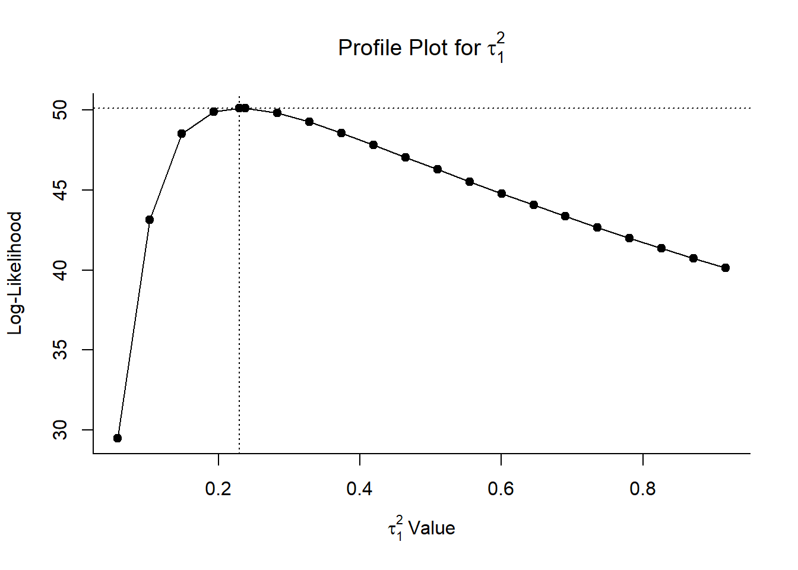
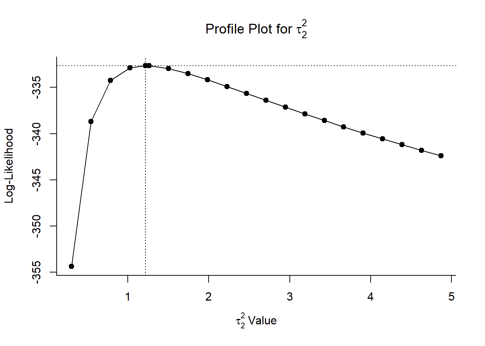
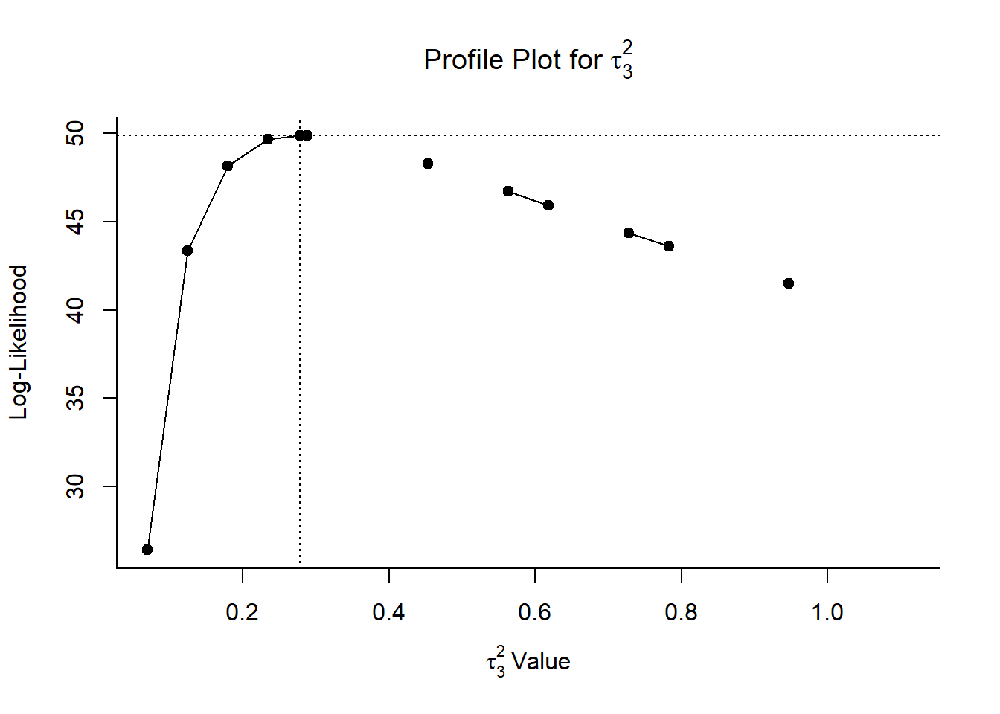
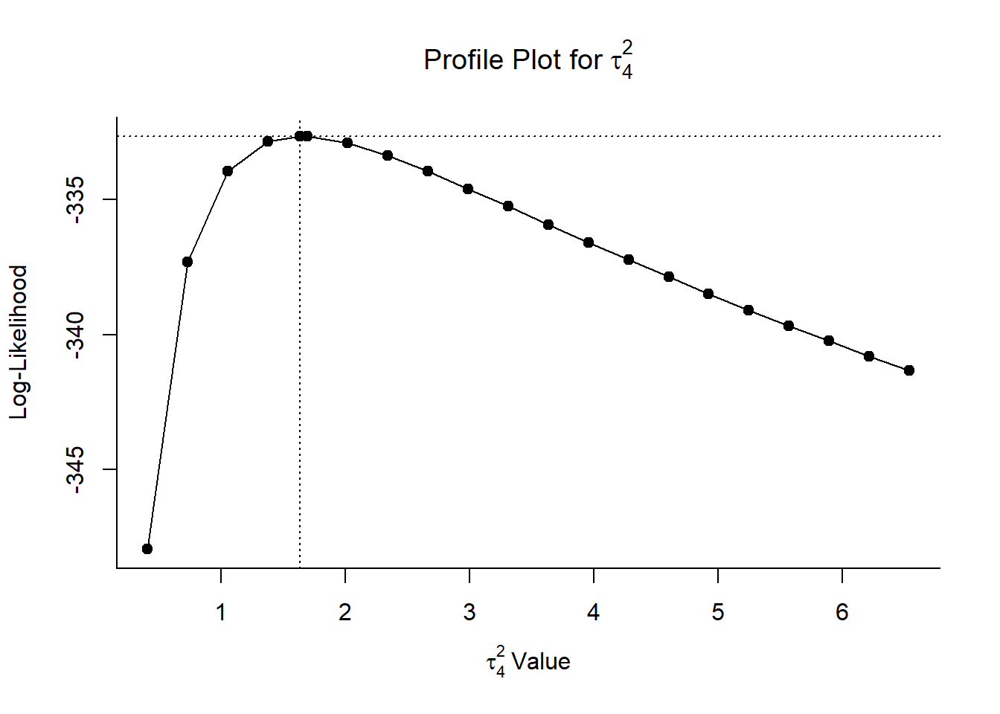
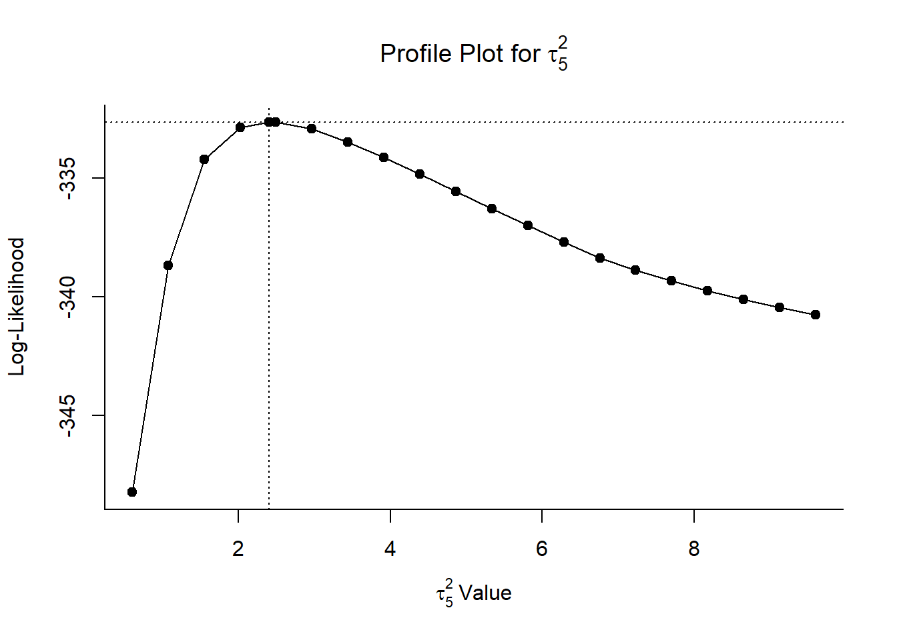
Lets present the meta-analysis results for the moderator variables in a forest style plot. First lets create a table of the results.
results_AI <- data.frame(cbind(PM_mv$b,
PM_mv$ci.lb,
PM_mv$ci.ub))
efficacy <- as_tibble(results_AI)
efficacy$Treatment <-
factor(c(
"control",
"Early",
"Recommended",
"Recommended_plus",
"Late",
"Late_plus"
))
efficacy$se <- PM_mv$se
colnames(efficacy) <-
c("Mean", "CIs_lower", "CI_upper", "Treatment", "SE")
efficacy## # A tibble: 6 x 5
## Mean CIs_lower CI_upper Treatment SE
## <dbl> <dbl> <dbl> <fct> <dbl>
## 1 1.11 0.948 1.28 control 0.0850
## 2 -0.0481 -0.145 0.0488 Early 0.0494
## 3 0.0953 0.0359 0.155 Recommended 0.0303
## 4 0.176 0.0949 0.257 Recommended_plus 0.0414
## 5 0.113 0.0533 0.173 Late 0.0304
## 6 0.147 0.0641 0.229 Late_plus 0.0421Let’s view these comparisons in a plot.
YieldContrasts <- efficacy %>%
filter(Treatment != "control") %>%
mutate(Treatment = factor(Treatment, levels = rev(
c(
"Early",
"Recommended",
"Recommended_plus",
"Late",
"Late_plus"
)
))) %>%
ggplot(aes(Treatment, Mean)) +
geom_hline(
yintercept = seq(-0.05, 0.3, by = 0.05),
color = usq_cols("usq charcoal"),
linetype = 3
) +
geom_hline(yintercept = 0) +
geom_point(aes(size = 1 / SE), shape = 15) +
geom_linerange(aes(ymin = CIs_lower, ymax = CI_upper)) +
coord_flip()
YieldContrasts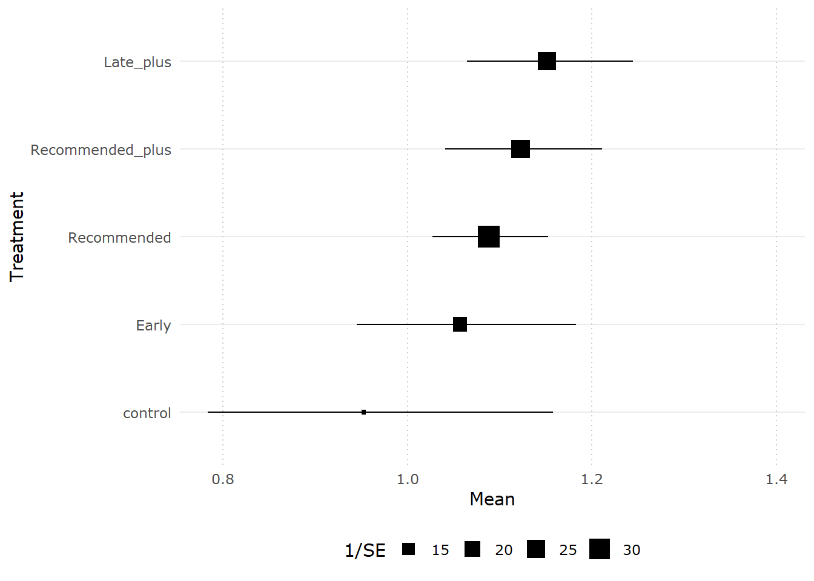
5.1.2 Forest plot of trial treatment effect per trial
Lets look at the trial variability in this model with a forest plot
# THIS NEEDS TO BE FIXED
source(here("R/change_labels.R"))
source(here("R/forest_rows.R"))
### Sort and arrange data-frame accordingly and produce a index vector to inform the order of each "Trial" on the plot
index1 <- dat1 %>%
mutate(ID = seq_along(trial_ref)) %>%
mutate(spray_management =
factor(spray_management,
levels = c("Early","Late","Recommended",
"Recommended_plus","Late_plus"))) %>%
arrange(desc(spray_management), location, desc(grain_yield.t.ha)) %>%
mutate(ID2 = order(ID))%>%
pull(ID2)
### Use forest rows function to return a list of where to place on the plot: sub-titles, each trial row, and summary prediction for each treatment.
### this list can be used below to reference where to plot each variable
rows1 <- forest_rows(head_row = 186,
ord_var = dat1$spray_management,
index = index1,
gap = 5,
row_offset = -2)
### A data-frame of meta-model coefficients used to produce the summary polygons for each treatment
polys <- data.frame(ref = change_labels(names(coef(PM_mv))),
x = c(coef(PM_mv)[1],coef(PM_mv)[1] + coef(PM_mv)[2:6]),
ci.lb = c(PM_mv$ci.lb[1],PM_mv$ci.lb[1] +PM_mv$ci.lb[2:6]),
ci.ub = c(PM_mv$ci.ub[1],PM_mv$ci.ub[1] +PM_mv$ci.ub[2:6]))[c(2,5,3,4,6,1),]
polys$rows <- rows1$pred_row - 1.5
forest1 <- metafor::forest(PM_mv, cex = 1.15 , width = 5,
#order = "fit",
rows = rows1$trows-1.5,
ilab = cbind(dat1$year,
dat1$row_spacing, dat1$host_genotype, dat1$dose),
ilab.xpos = c(-2.35,-2.1,-1.8,-1.4)+1,
slab = NA,
xlim = c(-2, 4),
ylim = c(5,190),
xlab = "Grain yield mean difference",
addfit = FALSE,
efac = c(0.2,0.15,0.2),
at = seq(-0.5,3, 0.5))
### code which puts lines and annotations on the plot, its a bit long...
source(here("R/add_annotations.R"))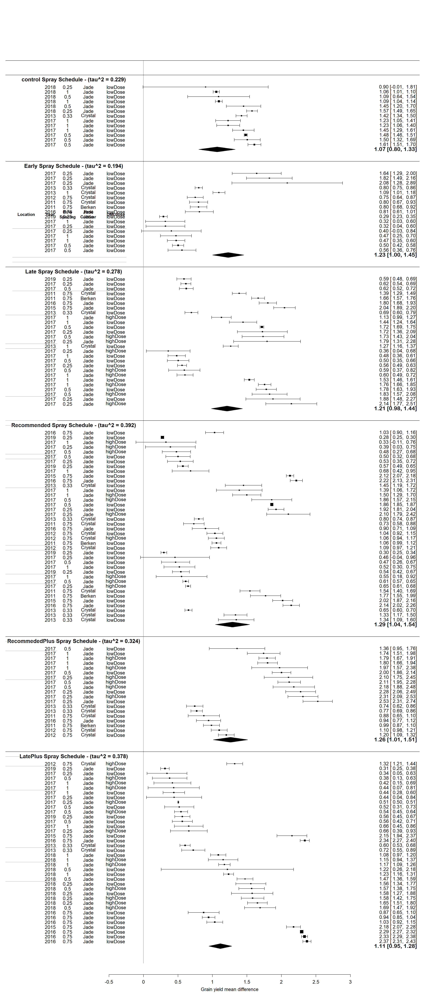
5.2 netmeta analysis
We can use the netmeta package to give a graphical representation of the pairwise comparisons.
Let’s analyse the data again using a different statistical approach to see if our outcome with the metafor package was robust.
The netmeta package uses a frequentist approach to the analysis and focuses on the pairwise comparisons between treatments.
datPM3 <- slimmer_PM_dat %>%
group_by(trial, spray_management, n) %>%
summarize(yi_mean = mean(grain_yield.t.ha),
vi_mean = mean(yield_error)) %>%
ungroup()
PM_con <- pairwise(
treat = spray_management,
n = n,
mean = yi_mean,
sd = sqrt(vi_mean),
studlab = trial,
data = datPM3,
sm = "MD"
)
net_con <- netmeta(TE,
seTE,
treat1,
treat2,
studlab,
data = PM_con,
sm = "MD")
summary(net_con)## Number of studies: k = 30
## Number of treatments: n = 6
## Number of pairwise comparisons: m = 163
## Number of designs: d = 9
##
## Fixed effects model
##
## Treatment estimate (sm = 'MD'):
## control Early Late Late_plus Recommended Recommended_plus
## control . 0.0463 -0.0727 -0.1648 -0.0872 -0.1235
## Early -0.0463 . -0.1190 -0.2111 -0.1334 -0.1697
## Late 0.0727 0.1190 . -0.0921 -0.0144 -0.0508
## Late_plus 0.1648 0.2111 0.0921 . 0.0777 0.0414
## Recommended 0.0872 0.1334 0.0144 -0.0777 . -0.0363
## Recommended_plus 0.1235 0.1697 0.0508 -0.0414 0.0363 .
##
## Lower 95%-confidence limit:
## control Early Late Late_plus Recommended Recommended_plus
## control . 0.0073 -0.1078 -0.2164 -0.1191 -0.1623
## Early -0.0853 . -0.1570 -0.2679 -0.1597 -0.2116
## Late 0.0376 0.0809 . -0.1433 -0.0452 -0.0878
## Late_plus 0.1132 0.1543 0.0409 . 0.0257 -0.0113
## Recommended 0.0552 0.1072 -0.0164 -0.1296 . -0.0715
## Recommended_plus 0.0847 0.1279 0.0138 -0.0940 0.0012 .
##
## Upper 95%-confidence limit:
## control Early Late Late_plus Recommended Recommended_plus
## control . 0.0853 -0.0376 -0.1132 -0.0552 -0.0847
## Early -0.0073 . -0.0809 -0.1543 -0.1072 -0.1279
## Late 0.1078 0.1570 . -0.0409 0.0164 -0.0138
## Late_plus 0.2164 0.2679 0.1433 . 0.1296 0.0940
## Recommended 0.1191 0.1597 0.0452 -0.0257 . -0.0012
## Recommended_plus 0.1623 0.2116 0.0878 0.0113 0.0715 .
##
## Random effects model
##
## Treatment estimate (sm = 'MD'):
## control Early Late Late_plus Recommended Recommended_plus
## control . -0.0207 -0.1194 -0.1860 -0.0955 -0.1572
## Early 0.0207 . -0.0987 -0.1653 -0.0748 -0.1366
## Late 0.1194 0.0987 . -0.0666 0.0239 -0.0378
## Late_plus 0.1860 0.1653 0.0666 . 0.0905 0.0288
## Recommended 0.0955 0.0748 -0.0239 -0.0905 . -0.0617
## Recommended_plus 0.1572 0.1366 0.0378 -0.0288 0.0617 .
##
## Lower 95%-confidence limit:
## control Early Late Late_plus Recommended Recommended_plus
## control . -0.1143 -0.2005 -0.3063 -0.1639 -0.2301
## Early -0.0729 . -0.1940 -0.3062 -0.1655 -0.2302
## Late 0.0382 0.0035 . -0.1929 -0.0536 -0.1179
## Late_plus 0.0657 0.0245 -0.0597 . -0.0330 -0.0960
## Recommended 0.0271 -0.0159 -0.1014 -0.2140 . -0.1297
## Recommended_plus 0.0844 0.0429 -0.0422 -0.1536 -0.0062 .
##
## Upper 95%-confidence limit:
## control Early Late Late_plus Recommended Recommended_plus
## control . 0.0729 -0.0382 -0.0657 -0.0271 -0.0844
## Early 0.1143 . -0.0035 -0.0245 0.0159 -0.0429
## Late 0.2005 0.1940 . 0.0597 0.1014 0.0422
## Late_plus 0.3063 0.3062 0.1929 . 0.2140 0.1536
## Recommended 0.1639 0.1655 0.0536 0.0330 . 0.0062
## Recommended_plus 0.2301 0.2302 0.1179 0.0960 0.1297 .
##
## Quantifying heterogeneity / inconsistency:
## tau^2 = 0.0152; tau = 0.1232; I^2 = 67.1% [58.1%; 74.1%]
##
## Tests of heterogeneity (within designs) and inconsistency (between designs):
## Q d.f. p-value
## Total 224.67 74 < 0.0001
## Within designs 144.84 59 < 0.0001
## Between designs 79.83 15 < 0.0001Now let’s visualise this as a forest plot.
forest(
net_con,
reference.group = 1,
rightcols = c("effect", "ci", "Pscore"),
rightlabs = "P-Score",
small.values = "bad"
)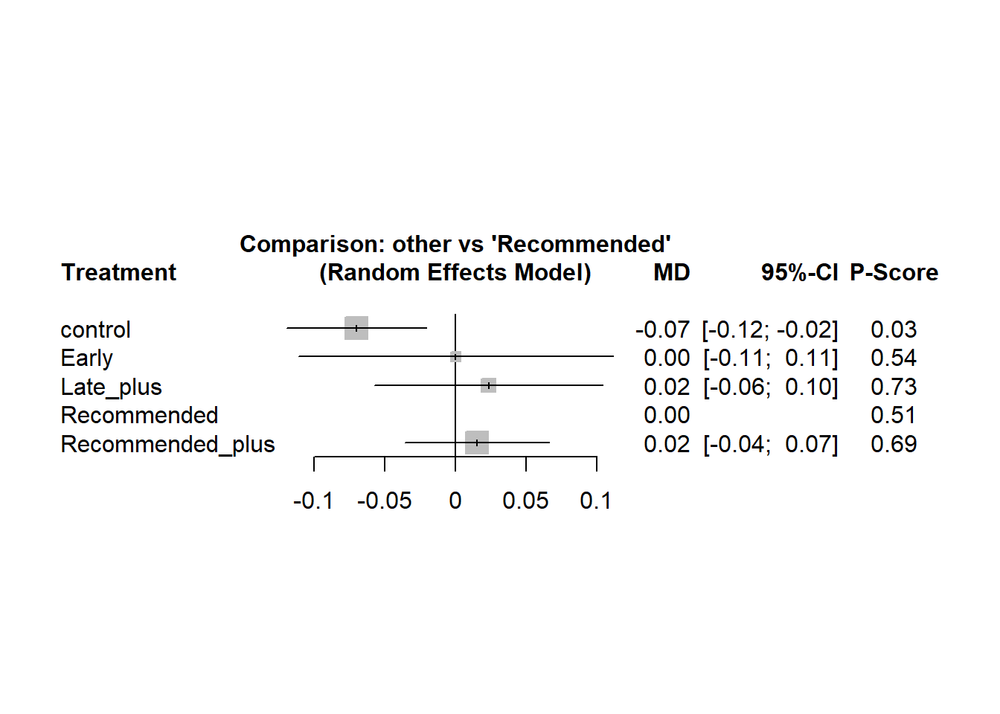
The netmeta analysis suggests the spray schedule commencing early are no different to any other treatment including the no spray control.
It estimates the mean is very similar to the recommended treatments.
The Recommended_plus and Late_plus treatments show higher mean estimates, however are not significantly different from the Early estimate.
netgraph(
net_con,
plastic = FALSE,
col = usq_cols("support orange"),
thickness = "number.of.studies",
points = FALSE,
col.points = usq_cols("usq charcoal"),
cex.points = 1,
number.of.studies = TRUE,
cex.number.of.studies = 1,
col.number.of.studies = "black",
bg.number.of.studies = usq_cols("support orange"),
multiarm = FALSE,
col.multiarm = usq_cols("support turquiose"),
pos.number.of.studies = 0.5
)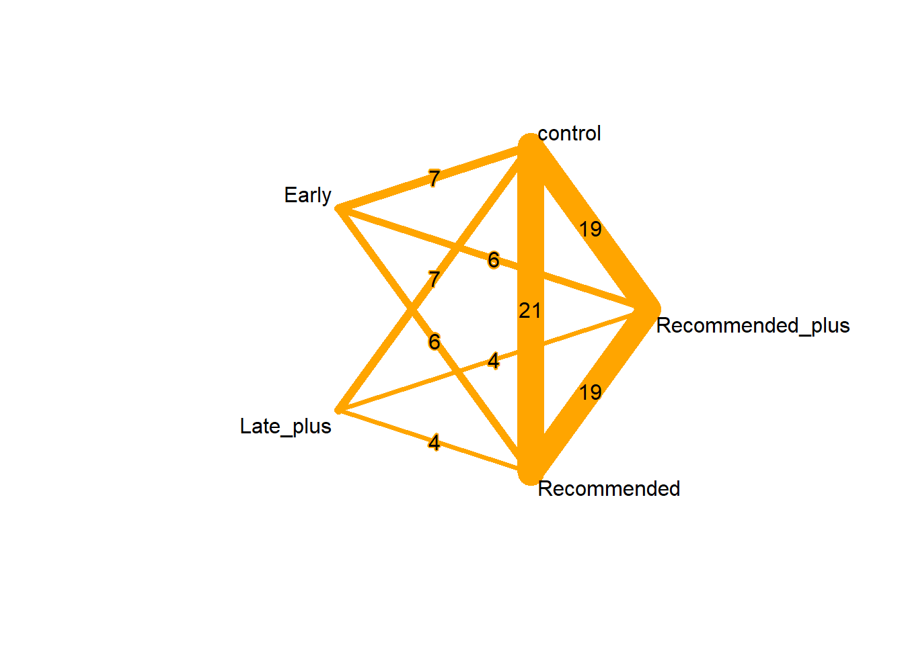
## League table (fixed effects model):
##
## control -0.1284 [-0.2030; -0.0539]
## 0.0463 [ 0.0073; 0.0853] Early
## -0.0727 [-0.1078; -0.0376] -0.1190 [-0.1570; -0.0809]
## -0.1648 [-0.2164; -0.1132] -0.2111 [-0.2679; -0.1543]
## -0.0872 [-0.1191; -0.0552] -0.1334 [-0.1597; -0.1072]
## -0.1235 [-0.1623; -0.0847] -0.1697 [-0.2116; -0.1279]
##
## -0.0676 [-0.1116; -0.0236] -0.2274 [-0.2992; -0.1555]
## -0.1481 [-0.2208; -0.0753] .
## Late -0.0684 [-0.1392; 0.0024]
## -0.0921 [-0.1433; -0.0409] Late_plus
## -0.0144 [-0.0452; 0.0164] 0.0777 [ 0.0257; 0.1296]
## -0.0508 [-0.0878; -0.0138] 0.0414 [-0.0113; 0.0940]
##
## -0.0749 [-0.1100; -0.0399] -0.1103 [-0.1534; -0.0672]
## -0.1403 [-0.1680; -0.1126] -0.1482 [-0.2392; -0.0572]
## 0.0014 [-0.0352; 0.0379] -0.0533 [-0.0975; -0.0091]
## 0.1602 [ 0.0643; 0.2561] -0.0019 [-0.0742; 0.0705]
## Recommended -0.0474 [-0.0851; -0.0096]
## -0.0363 [-0.0715; -0.0012] Recommended_plus
##
## League table (random effects model):
##
## control -0.1029 [-0.2313; 0.0255]
## -0.0207 [-0.1143; 0.0729] Early
## -0.1194 [-0.2005; -0.0382] -0.0987 [-0.1940; -0.0035]
## -0.1860 [-0.3063; -0.0657] -0.1653 [-0.3062; -0.0245]
## -0.0955 [-0.1639; -0.0271] -0.0748 [-0.1655; 0.0159]
## -0.1572 [-0.2301; -0.0844] -0.1366 [-0.2302; -0.0429]
##
## -0.1329 [-0.2304; -0.0355] -0.2299 [-0.3718; -0.0881]
## -0.1199 [-0.2296; -0.0102] .
## Late -0.0420 [-0.2030; 0.1189]
## -0.0666 [-0.1929; 0.0597] Late_plus
## 0.0239 [-0.0536; 0.1014] 0.0905 [-0.0330; 0.2140]
## -0.0378 [-0.1179; 0.0422] 0.0288 [-0.0960; 0.1536]
##
## -0.0937 [-0.1670; -0.0203] -0.1331 [-0.2128; -0.0535]
## -0.1104 [-0.2216; 0.0007] -0.1640 [-0.2814; -0.0466]
## 0.0258 [-0.0599; 0.1115] -0.0620 [-0.1497; 0.0256]
## 0.1440 [-0.0305; 0.3185] 0.0052 [-0.1693; 0.1796]
## Recommended -0.0682 [-0.1376; 0.0012]
## -0.0617 [-0.1297; 0.0062] Recommended_plus## Q statistics to assess homogeneity / consistency
##
## Q df p-value
## Total 224.67 74 < 0.0001
## Within designs 144.84 59 < 0.0001
## Between designs 79.83 15 < 0.0001
##
## Design-specific decomposition of within-designs Q statistic
##
## Design Q df p-value
## control:Late_plus 0.46 2 0.7934
## control:Recommended 0.10 1 0.7472
## control:Early:Late:Recommended:Recommended_plus 39.85 20 0.0052
## control:Late:Late_plus:Recommended:Recommended_plus 18.72 8 0.0164
## control:Late:Recommended:Recommended_plus 0.66 3 0.8830
## control:Recommended:Recommended_plus 36.58 10 < 0.0001
## Early:Late:Recommended:Recommended_plus 48.46 15 < 0.0001
##
## Between-designs Q statistic after detaching of single designs
##
## Detached design Q df p-value
## control:Early 69.72 14 < 0.0001
## control:Late_plus 77.16 14 < 0.0001
## control:Recommended 79.28 14 < 0.0001
## Recommended:Recommended_plus 71.93 14 < 0.0001
## control:Early:Late:Recommended:Recommended_plus 65.30 11 < 0.0001
## control:Late:Late_plus:Recommended:Recommended_plus 52.34 11 < 0.0001
## control:Late:Recommended:Recommended_plus 61.77 12 < 0.0001
## control:Recommended:Recommended_plus 74.01 13 < 0.0001
## Early:Late:Recommended:Recommended_plus 69.73 12 < 0.0001
##
## Q statistic to assess consistency under the assumption of
## a full design-by-treatment interaction random effects model
##
## Q df p-value tau.within tau2.within
## Between designs 15.08 15 0.4456 0.1230 0.0151## Separate indirect from direct evidence (SIDE) using back-calculation method
##
## Fixed effects model:
##
## comparison k prop nma direct indir. Diff z p-value
## control:Early 7 0.27 0.0463 -0.1284 0.1121 -0.2405 -5.39 < 0.0001
## control:Late 11 0.64 -0.0727 -0.0676 -0.0817 0.0141 0.38 0.7058
## control:Late_plus 6 0.52 -0.1648 -0.2274 -0.0982 -0.1292 -2.45 0.0142
## control:Recommended 19 0.83 -0.0872 -0.0749 -0.1481 0.0732 1.67 0.0942
## control:Recommended_plus 17 0.81 -0.1235 -0.1103 -0.1802 0.0699 1.38 0.1671
## Early:Late 12 0.27 -0.1190 -0.1481 -0.1080 -0.0400 -0.92 0.3581
## Early:Late_plus 0 0 -0.2111 . -0.2111 . . .
## Early:Recommended 12 0.90 -0.1334 -0.1403 -0.0727 -0.0676 -1.53 0.1271
## Early:Recommended_plus 12 0.21 -0.1697 -0.1482 -0.1755 0.0273 0.52 0.6012
## Late:Late_plus 3 0.52 -0.0921 -0.0684 -0.1180 0.0496 0.95 0.3426
## Late:Recommended 17 0.71 -0.0144 0.0014 -0.0531 0.0545 1.57 0.1155
## Late:Recommended_plus 17 0.70 -0.0508 -0.0533 -0.0449 -0.0084 -0.20 0.8388
## Late_plus:Recommended 3 0.29 0.0777 0.1602 0.0434 0.1168 2.01 0.0449
## Late_plus:Recommended_plus 3 0.53 0.0414 -0.0019 0.0898 -0.0917 -1.70 0.0883
## Recommended:Recommended_plus 24 0.87 -0.0363 -0.0474 0.0354 -0.0827 -1.57 0.1169
##
## Random effects model:
##
## comparison k prop nma direct indir. Diff z p-value
## control:Early 7 0.53 -0.0207 -0.1029 0.0726 -0.1755 -1.83 0.0667
## control:Late 11 0.69 -0.1194 -0.1329 -0.0887 -0.0442 -0.49 0.6225
## control:Late_plus 6 0.72 -0.1860 -0.2299 -0.0737 -0.1562 -1.14 0.2524
## control:Recommended 19 0.87 -0.0955 -0.0937 -0.1080 0.0143 0.14 0.8906
## control:Recommended_plus 17 0.84 -0.1572 -0.1331 -0.2804 0.1473 1.47 0.1426
## Early:Late 12 0.75 -0.0987 -0.1199 -0.0338 -0.0861 -0.76 0.4455
## Early:Late_plus 0 0 -0.1653 . -0.1653 . . .
## Early:Recommended 12 0.67 -0.0748 -0.1104 -0.0040 -0.1065 -1.09 0.2778
## Early:Recommended_plus 12 0.64 -0.1366 -0.1640 -0.0884 -0.0756 -0.76 0.4466
## Late:Late_plus 3 0.62 -0.0666 -0.0420 -0.1060 0.0639 0.48 0.6293
## Late:Recommended 17 0.82 0.0239 0.0258 0.0152 0.0107 0.10 0.9171
## Late:Recommended_plus 17 0.83 -0.0378 -0.0620 0.0839 -0.1459 -1.33 0.1843
## Late_plus:Recommended 3 0.50 0.0905 0.1440 0.0368 0.1072 0.85 0.3949
## Late_plus:Recommended_plus 3 0.51 0.0288 0.0052 0.0535 -0.0484 -0.38 0.7042
## Recommended:Recommended_plus 24 0.96 -0.0617 -0.0682 0.0879 -0.1561 -0.90 0.3680
##
## Legend:
## comparison - Treatment comparison
## k - Number of studies providing direct evidence
## prop - Direct evidence proportion
## nma - Estimated treatment effect (MD) in network meta-analysis
## direct - Estimated treatment effect (MD) derived from direct evidence
## indir. - Estimated treatment effect (MD) derived from indirect evidence
## Diff - Difference between direct and indirect treatment estimates
## z - z-value of test for disagreement (direct versus indirect)
## p-value - p-value of test for disagreement (direct versus indirect)nm1 <- netmeasures(net_con)
plot(
nm1$meanpath,
nm1$minpar,
pch = "",
xlab = "Mean path length",
ylab = "Minimal parallelism"
)
text(nm1$meanpath, nm1$minpar, names(nm1$meanpath), cex = 0.8)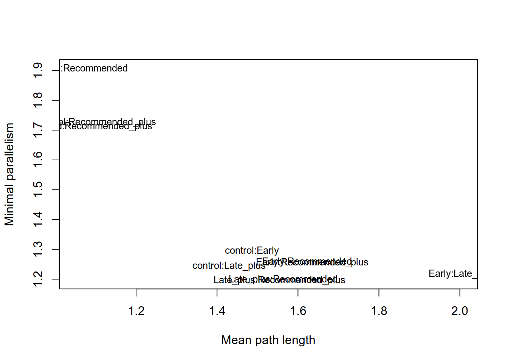
write.csv(slimmer_PM_dat, file = "data/GYmeta_data.csv")
save(dat1, efficacy, PM_mv, YieldContrasts, file = here("cache/Meta-analysisData.Rdata"))5.2.0.1 Powdery mildewMBM comparison – Delete
One aspect we would like to consider is how the results of this meta-analysis compares to how the PowderyMildewMBM estimates the effect of fungicide applications on grain yields. Below we create a data frame of the mitigation factors for each spray scenario so we can compare them to the outcomes of the meta-analysis.
PMBM <-
data.frame(Sprays = c(rep(1,20), rep(2,20)),
Disease = rep(c(rep("NotPresent", 5),
rep("LowerCanopy", 5),
rep("MidCanopy", 5),
rep("UpperCanopy", 5)),2),
CropMaturity = rep(c("Vegetative", "Budding", "Flowering",
"EarlyPod", "LatePod"), 8),
mitigation = c(0.57, 0.855, 0.95,0.95,0.95,
0.45995, 0.52919,0.5530,0.390,0.1642,
0.291258,0.351051, 0.2454,0.1409,0.4717,
0,0.059597,0.093034,0.0682476,0.0215584,
0.95,0.95,0.95,0.95,0.95,
0.766588,0.6991,0.55042,0.390056,0.1642,
0.485429,0.390,0.2454,0.140904,0.0471684,
0.0791,0.086068,0.093034,0.0682476,0.0215584))
# what is the mean age of the plant in our data when disease first occurs and we apply the first spray?
source("R/import_data.R")
PM_MB_dat <- import_data()
mean(PM_MB_dat$first_sign_disease - PM_MB_dat$planting_date, na.rm =TRUE) # 46.3 days (which is when the plant is flowering)## Time difference of 46.3207 days## intrcpt
## 0.07880702## intrcpt
## 0.1364556## Sprays Disease CropMaturity mitigation
## 1 1 NotPresent Flowering 0.950000
## 2 1 LowerCanopy Flowering 0.553000
## 3 1 MidCanopy Flowering 0.245400
## 4 1 UpperCanopy Flowering 0.093034
## 5 2 NotPresent Flowering 0.950000
## 6 2 LowerCanopy Flowering 0.550420
## 7 2 MidCanopy Flowering 0.245400
## 8 2 UpperCanopy Flowering 0.093034To to a better comparison I need to know how the mitigation factor is calculated with the estimated yields.
References
Viechtbauer, Wolfgang. 2010. “Conducting Meta-Analyses in R with the metafor Package.” Journal of Statistical Software 36 (3): 1–48. https://doi.org/10.18637/jss.v036.i03.